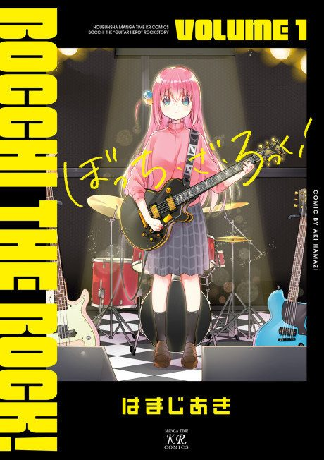

Bocchi the Rock!
ぼっち・ざ・ろっく！
After the anime, read the manga from Chapter 22.
8.7AniList score
—Animeter, no votes yet
12episodes
Arcs
Episodes numbered 1–12 (single season, 2022); a second season was announced in 2025 but has not aired.
Story arcFiller arc12 episodes
1
Season 1
Joining Kessoku Band
Hitori Gotō, a painfully shy high schooler who is secretly a skilled online guitarist, gets pulled into a band as an emergency fill-in.
Ep 1–4
2
Season 1
The First Live
Kessoku Band tries to pass Starry's audition and sell enough tickets for its first real show.
Ep 5–8
3
Season 1
Summer and the School Festival
After a lonely summer, Bocchi decides to perform at her own school's cultural festival.
Ep 9–12